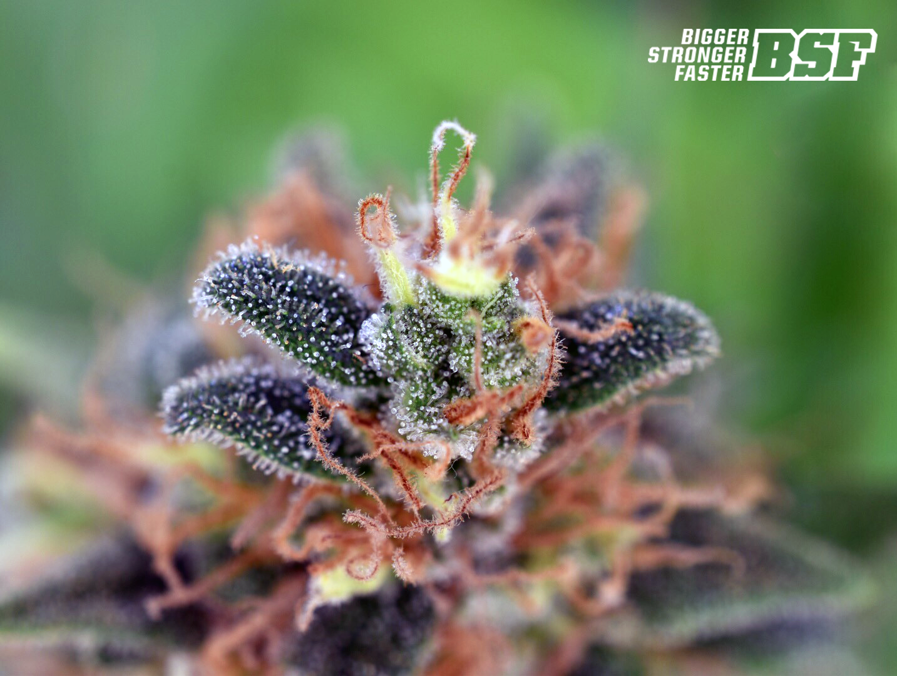
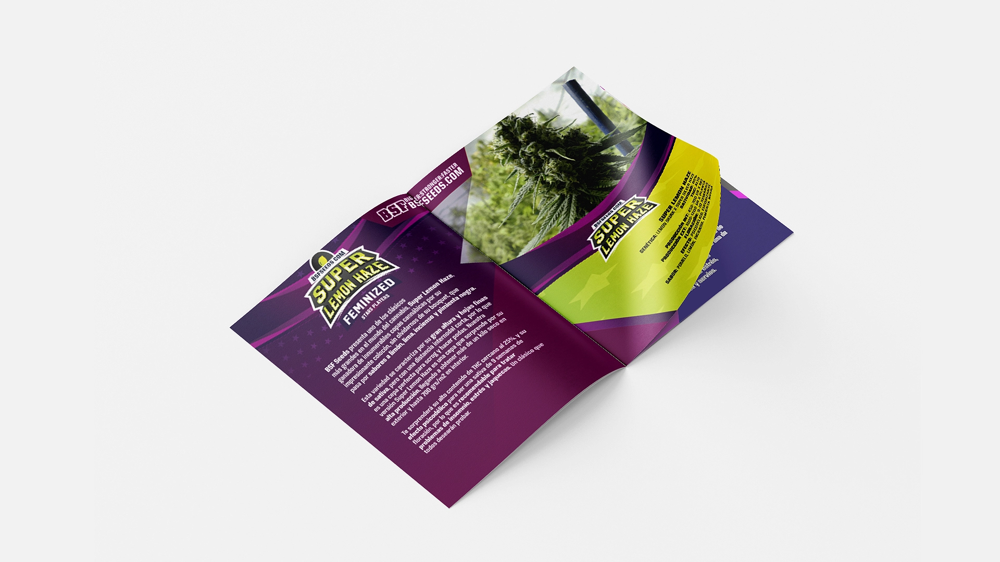
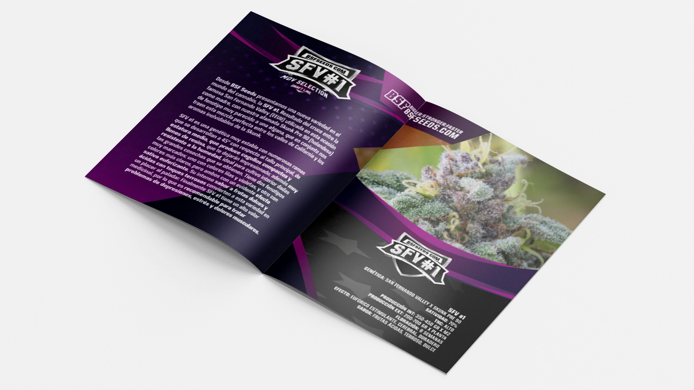
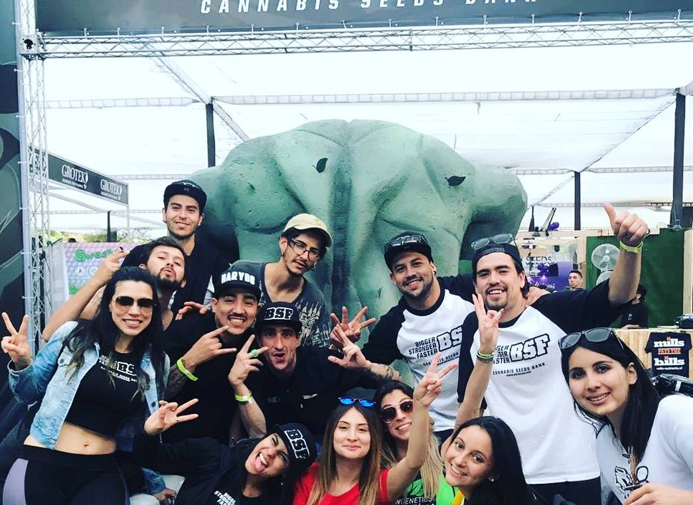
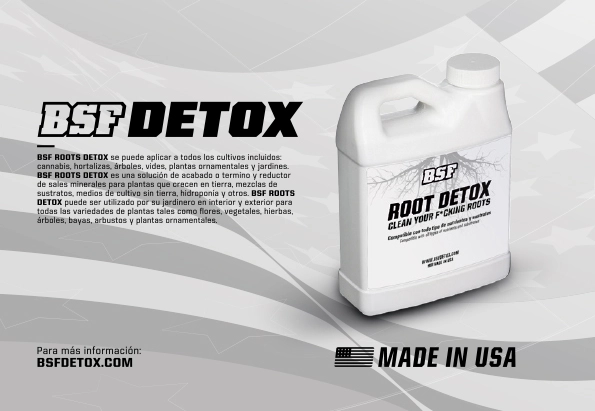
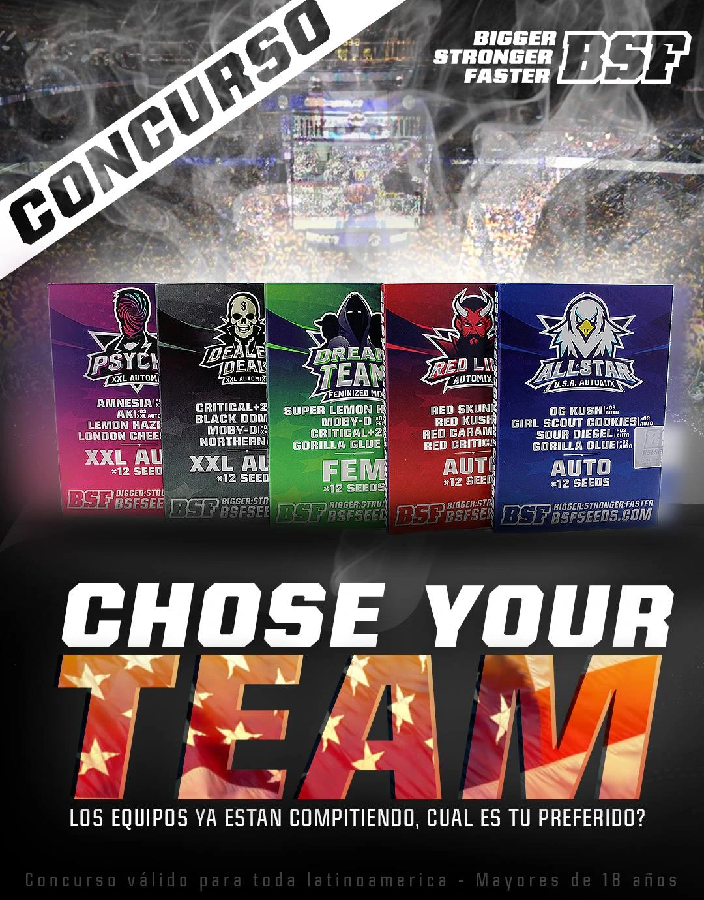
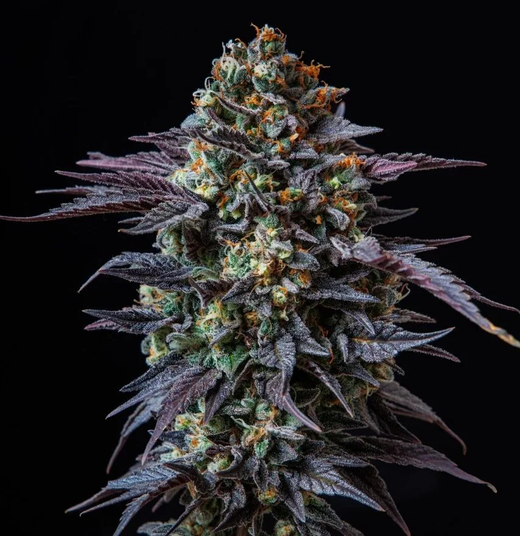
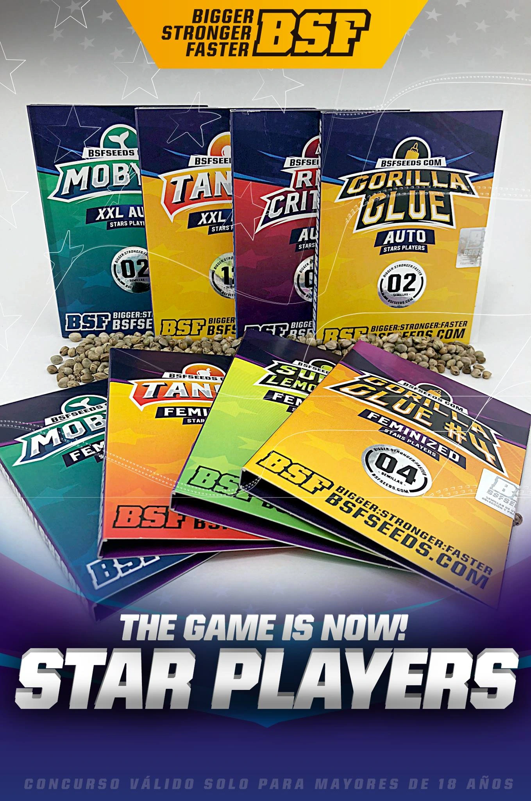

Desarrollamos la identidad integral y el ecosistema de marca para BSF Seeds Company. En una estrecha colaboración estratégica, lideramos su posicionamiento nacional e internacional a través de campañas de comunicación de alto impacto, branding corporativo y estrategias de expansión para los mercados de LATAM y Europa. Tras una década de evolución constante, la marca ha logrado presencia en 12 países y 3 continentes, consolidándose como un referente global y uno de los bancos de semillas más prestigiosos de la industria.

Una Visión Global
La expansión hacia mercados internacionales exigió un lenguaje visual que fuera a la vez versátil e impactante. Desarrollamos un sistema gráfico que respeta la herencia de la marca mientras la proyecta hacia un futuro moderno y sofisticado, asegurando consistencia en cada punto de contacto.


Estrategia e Impacto
Más allá de la estética, cada decisión fue impulsada por objetivos de comunicación claros. Desde la dirección de arte fotográfica hasta la selección tipográfica, el objetivo fue consolidar a BSF como una autoridad en el mercado global, equilibrando la innovación técnica con la excelencia natural.




